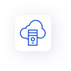

Which is the best Parent School App
you could go for?
A wide range of parent school apps is now available in the market to create an engaging and interactive school communication experience. But while deciding to go with a parent school app, it always helps if the app matches your requirements and meets your school communication goals and expectations. However, suppose you're looking for a comprehensive parent school app that enables you to enjoy all the above features in a safe and secure environment. In that case, Schoolvoice is one such software you should consider trying out.
Schoolvoice is an advanced and feature-rich parent school app designed to make school communication effective and productive. It is an intuitive and engaging communication platform that streamlines communication and brings together schools and parents in a safe and secure environment.
With Schoolvoice, a school can streamline their entire school communication process, efficiently manage the activities of the staff and teachers, check the status and reports of the messages sent to parents and students, and instantly review the entire communication activities.

Actionable Messages
One unique feature that makes Schoolvoice a comprehensive school communication platform is the Actionable Messages. The Actionable Messages are messages that come with predefined built-in responses. The school can send announcements, circulars, request fee payments, documents, and much more quickly and get instant parent engagement with this feature.

Instant Messaging
A built-in chat feature enables schools and parents to initiate chats directly from the smartphone app. The central part of the instant messaging feature is that the parents and teachers can chat without sharing their phone numbers or contact details.
Stories
A safe and secure way for teachers to share the fun class activities of children with their respective parents as videos and pictures. So the parents can enjoy watching their loved ones having fun at school.

Teacher Drive
A free and secure cloud storage for teachers to store school documents and personal files. With this feature, the teachers can share homework, class materials, score sheets, and other documents quickly with students and parents to access them from anywhere.

Rewards and Challenges
A unique feature of Schoolvice that enables teachers to reward students for their positive behaviors and skills with reward points and trophies.

Live Broadcasts
A live chat feature that connects teachers with students and parents and helps make education accessible from anywhere.

Instant Reports
A feature that enables schools to check parent engagement with instant reports to know how the communication is happening in the school.
How are we different from
our competition
With all the advanced interactive and engagement features, Schoolvoice enables schools and parents to interact and create better learning opportunities and outcomes for children. In addition, Schoolvoce stands apart from other parent school applications because of its unique features like Actionable messages, which allow schools to communicate quickly and make communication swift and engaging for parents, teachers, and students.
Moreover, with all the school-oriented features, Schoolvoice provides a communication platform that can grow as an ecosystem and facilitate the best possible environment to share ideas, exchange feedback, and promote teaching and learning. Apart from that, Schoolvoice is a cross-platform school communication software available in many parts of the globe, including the USA, UAE, Europe, and other major countries.
With Schoolvoice, your school can control all your communication and engagement activities, bring more initiatives to improve parent-teacher relationships, and build a much better school environment for students.